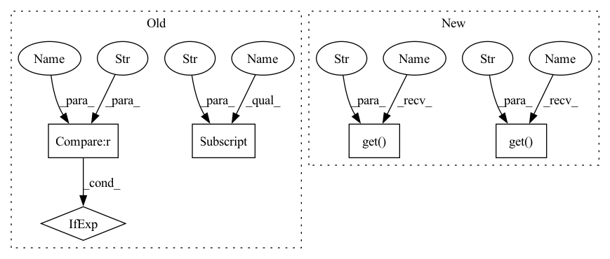

Pattern ID :20807
Before Change
self.limits = kwargs["limits"] if "limits" in kwargs else None
self.cyclic = kwargs["cyclic"] if "cyclic" in kwargs else False
self.user_fixed = kwargs["fixed"] if "fixed" in kwargs else None
self.update_fixed(False)
if "value" in kwargs:
self.set_value(kwargs["value"], override_fixed = True)After Change
self.name = name
self.limits = kwargs.get("limits", None)
self.cyclic = kwargs.get("cyclic" , False)
self.user_fixed = kwargs.get("fixed", None)
self.update_fixed(False)
self.value = None
self.representation = None
if "value" in kwargs:
self.set_value(kwargs["value"], override_fixed = True)
self.units = kwargs.get("units" , "none")
self.uncertainty = kwargs.get("uncertainty", None)
def update_fixed(self, fixed):
self.fixed = fixed or bool(self.user_fixed)In pattern: SUPERPATTERN
Frequency: 3
Non-data size: 5
Instances Fragment ID: 67017726
Project Name: connorstoneastro/autoprof
Commit Name: 5da1a724337a518e60e5af28a14dbea3d8012439
Time: 2022-06-10
Author: connorstone628@gmail.com
File Name: autoprof/models/parameter_object.py
M Class Name: Parameter
N Class Name: Parameter
M Method Name: __init__(2)
N Method Name: __init__(2)
M Parent Class: object
N Parent Class: object
M File Name: autoprof/models/parameter_object.py
N File Name: autoprof/models/parameter_object.py
M Start Line: 10
M End Line: 20
N Start Line: 10
N End Line: 19
Before Change
self.limits = kwargs["limits"] if "limits" in kwargs else None
self.cyclic = kwargs["cyclic"] if "cyclic" in kwargs else False
self.user_fixed = kwargs["fixed"] if "fixed" in kwargs else None
self.update_fixed(False)
if "value" in kwargs:
self.set_value(kwargs["value"], override_fixed = True)After Change
self.name = name
self.limits = kwargs.get("limits", None)
self.cyclic = kwargs.get( "cyclic", False)
self.user_fixed = kwargs.get("fixed", None)
self.update_fixed(False)
self.value = None
self.representation = None
if "value" in kwargs:
self.set_value(kwargs["value"], override_fixed = True)
self.units = kwargs.get("units" , "none" )
self.uncertainty = kwargs.get("uncertainty", None)
def update_fixed(self, fixed):
self.fixed = fixed or bool(self.user_fixed) Fragment ID: 67017727
Project Name: connorstoneastro/autoprof
Commit Name: 5da1a724337a518e60e5af28a14dbea3d8012439
Time: 2022-06-10
Author: connorstone628@gmail.com
File Name: autoprof/models/parameter_object.py
M Class Name: Parameter
N Class Name: Parameter
M Method Name: __init__(2)
N Method Name: __init__(2)
M Parent Class: object
N Parent Class: object
M File Name: autoprof/models/parameter_object.py
N File Name: autoprof/models/parameter_object.py
M Start Line: 10
M End Line: 20
N Start Line: 10
N End Line: 19
Before Change
"num_leaves": params[
"num_leaves"] if "num_leaves" in params else int(
round(max_leaves)),
"objective": params[
"objective"] if "objective" in params else objective,
"n_jobs": n_jobs,
"learning_rate": float(learning_rate),
"reg_alpha": float(reg_alpha),
After Change
else: objective = "regression"
self.params = {
"n_estimators": int(round(n_estimators)),
"num_leaves": params.get("num_leaves" , int(round(max_leaves))) ,
"objective": params.get("objective" , objective) ,
"n_jobs": n_jobs,
"learning_rate": float(learning_rate),
"reg_alpha": float(reg_alpha),
Fragment ID: 67017618
Project Name: microsoft/flaml
Commit Name: ae5f8e5426fdf66f31337791dbeddfb1b7448c1a
Time: 2021-03-19
Author: Sonicive@hotmail.com
File Name: flaml/model.py
M Class Name: LGBMEstimator
N Class Name: LGBMEstimator
M Method Name: __init__(13)
N Method Name: __init__(13)
M Parent Class: BaseEstimator
N Parent Class: BaseEstimator
M File Name: flaml/model.py
N File Name: flaml/model.py
M Start Line: 242
M End Line: 246
N Start Line: 242
N End Line: 243
Before Change
"learning_rate": learning_rate,
"thread_count": n_jobs,
"verbose": False,
"random_seed": params[
"random_seed"] if "random_seed" in params else 10242048,
}
if "regression" in task:
from catboost import CatBoostRegressor
After Change
"n_estimators": n_estimators,
"learning_rate": learning_rate,
"thread_count": n_jobs,
"verbose": params.get("verbose" , False) ,
"random_seed": params.get("random_seed" , 10242048) ,
}
if "regression" in task:
from catboost import CatBoostRegressor
Fragment ID: 67018256
Project Name: microsoft/flaml
Commit Name: ae5f8e5426fdf66f31337791dbeddfb1b7448c1a
Time: 2021-03-19
Author: Sonicive@hotmail.com
File Name: flaml/model.py
M Class Name: CatBoostEstimator
N Class Name: CatBoostEstimator
M Method Name: __init__(6)
N Method Name: __init__(6)
M Parent Class: BaseEstimator
N Parent Class: BaseEstimator
M File Name: flaml/model.py
N File Name: flaml/model.py
M Start Line: 628
M End Line: 630
N Start Line: 623
N End Line: 624